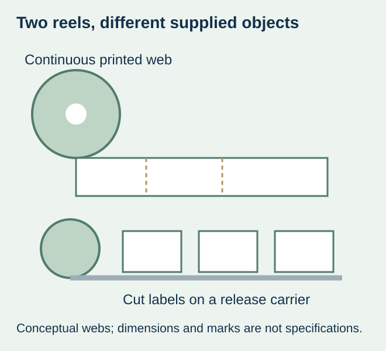
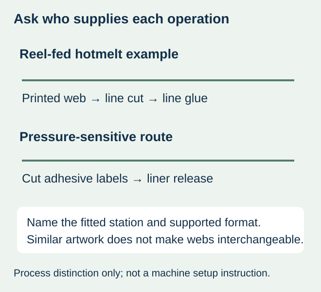

Choose the label format from the installed station, then specify the printed material. “BOPP labels on a reel” does not say whether the reel carries a continuous printed web for cutting and gluing on the line, or already cut self-adhesive labels carried on a release liner. Those formats should not be substituted because their artwork and bottle look similar.
For a hypothetical beverage launch, a brand designer may send a wrap layout while the co-packer expects a particular reel-fed hotmelt format. A quotation for self-adhesive labels would answer a different supply request. This is a derived buying scenario, not a report of a customer error or evidence of demand volume.


Identify three operations before asking for a price
| Supply route | What reaches the station | What must be confirmed |
|---|---|---|
| Reel-fed hotmelt wrap | Continuous printed label web for the supported cutting/gluing process | Actual material, repeat/cut specification, gluing interfaces and reel requirements |
| Pressure-sensitive roll | Specified cut labels on a release carrier with their adhesive construction | Label/liner geometry, dispensing direction, sensor path and reel requirements |
| Cut-and-stack wet-glue | Individual cut labels in a defined stack presentation | Magazine orientation, paper/reverse-side requirements and glue-system compatibility |
The official Krones Contiroll overview describes a reel-fed wrap system with a cutting unit and hotmelt applied at the leading and trailing label edges. It is a concrete equipment example of why a roll is not necessarily a self-adhesive construction. Its capabilities and operating figures are not specifications for every bottling line or evidence of equipment owned by ZFU.
A liner and a label web have different jobs
On the pressure-sensitive route, the release carrier supports the labels before dispensing. On the continuous-web route, the supplied printed web must represent what the actual machine will transport and cut. A buyer should obtain the station owner’s format description rather than infer the route from a reel photograph.
Do not order a familiar adhesive-backed stock and expect a hotmelt station to accept it. Equally, do not expect an unbacked printed wrap web to dispense from a pressure-sensitive applicator. If the installed equipment has several supported stations or modes, name the one scheduled for this product. A general machine-family brochure is not confirmation of the fitted configuration.


Build the RFQ around the conversion boundary
| Question | Useful input from the line owner | Quotation boundary |
|---|---|---|
| Where is each label cut? | Identified supplied format and station drawing | Who supplies the final cut versus a web to be cut |
| Where is adhesive supplied? | Accepted material and bonding arrangement | Printed stock, adhesive construction or separate line-applied glue |
| What must be detected? | Actual register/edge/sensor requirements | Required repeat/marks and their artwork locations |
| How is the wrap joined? | Accepted seam and representative bottle | Actual leading/trailing regions, finish and covered copy |
| What constitutes a trial? | Sample format and intended station/use conditions | Sample quantity, conversion scope and excluded work |
Use the actual station drawing for print repeat, cut position and any register marks. Do not add a generic eye mark or borrow a die-cut gap specification from another application. If these inputs are unavailable, obtain them before releasing a production file. This article supplies purchasing questions, not glue temperatures, cutter adjustments or machine settings.
Compare costs only after the supplied object is equal
Ask each supplier to state exactly what its price includes: material identity, print and finish, conversion, usable quantity basis, packaging, sample work and delivery. Keep separate any adhesive supplied to the bottling line, setup/changeover work and material lost during the agreed trial. A lower printed-web price alone cannot establish a lower cost per accepted finished bottle.
No process is automatically cheaper at every quantity. An existing co-packer configuration may make one route practical while another requires a different supplier or line. Confirm that commercial route first. The site’s general beverage-label page does not establish hotmelt-web production, glue supply or equipment-conversion services.
Approve the proposed web on the intended bottle and line
A flat color proof can answer artwork questions. It does not establish web transport, cut-to-print relationship, seam bonding or finished-pack handling. Agree what an actual sample must represent and retain its differences from the production proposal. Evaluate the relevant filled bottle and use sequence rather than promote a hand-applied artwork mock-up into line acceptance.
Keep the final station identity, accepted format, drawing revision and trial scope with the order. A later change from one reel architecture to another is a supply-process change even if the visible brand panel is unchanged. Refer the broader stack presentation question to the linked wet-glue guide and the finished overlap geometry to the seam guide; neither replaces this reel-format decision.
Discuss the unresolved label requirement
Send the bottler’s station make/model and supported label-format specification, bottle reference, web/sample photos, artwork repeat, dimensions, quantities by version and intended delivery date. Ask whether the required format can actually be supplied; do not request an unsupported substitution. Review the beverage-label product scope and prepare a label specification inquiry. The contact page opens an email draft and lists email or WhatsApp for attachments. Supply, proof options, testing, pricing and timing require project confirmation.